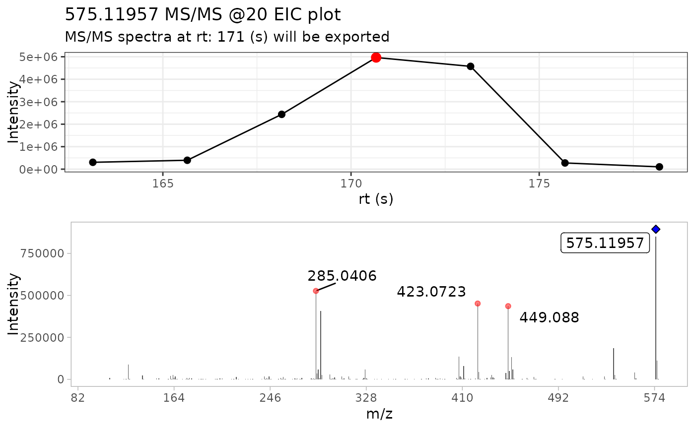

2 - Using the MS2extract batch pipeline
Cristian Quiroz-Moreno & Jessica Cooperstone
2024-04-22
Source:vignettes/Busing_batch_extract.Rmd
Busing_batch_extract.RmdIntroduction
In the previous tutorial Introduction to MS2extract package, we described in a detailed manner the core functions of the package. If you are starting to use the MS2extract package with this tutorial, we encourage you to take a look at this tutorial first.
Once you are familiar with the core workflow and functions of this
package, we can dive into an automated pipeline with the proposed
batch_*() functions. If you find that you want to extract
many MS/MS spectra at once, you will want to use
thesebatch_*() functions
The first three main steps have a separate batch_*()
alternative functions; importing mzXML files, extracting MS/MS spectra,
and detecting masses. However, exporting your library to a
.msp or .mgf file is able to detect if the
provided spectra comes from a single or multiple
.mzXML/.mzML files, so the same function works
in both cases.

Figure 1. Overview of general data processing pipeline to extract MS/MS spectra using the MS2extract package
Batch functions
We are familiar with the arguments that the core functions accept, in
this section we describe extra arguments that specific
batch_*() functions require.
batch_import_mzxml
Similarly to import_mzxml(), we need to provide the
compound metadata, with at minimum the compound name, formula,
ionization mode, and collision energy. Optionally, but recommended, the
region of interest where each compound elute (min_rt and
max_rt).
# Select the csv file name and path
batch_file <- system.file("extdata", "batch_read.csv",
package = "MS2extract"
)
# Read the data frame
batch_data <- read.csv(batch_file)
# File paths for Procyanidin A2 and Rutin
ProcA2_file <- system.file("extdata",
"ProcyanidinA2_neg_20eV.mzXML",
package = "MS2extract"
)
Rutin_file <- system.file("extdata",
"Rutin_neg_20eV.mzXML",
package = "MS2extract"
)
# Add file path - User should specified the file path -
batch_data$File <- c(ProcA2_file, Rutin_file)
# Checking batch_data data frame
dplyr::glimpse(batch_data)
#> Rows: 2
#> Columns: 7
#> $ Name <chr> "Procyanidin A2", "Rutin"
#> $ Formula <chr> "C30H24O12", "C27H30O16"
#> $ Ionization_mode <chr> "Negative", "Negative"
#> $ min_rt <int> 163, 162
#> $ max_rt <int> 180, 171
#> $ COLLISIONENERGY <chr> " 20 eV", " 20 eV"
#> $ File <chr> "/home/runner/work/_temp/Library/MS2extract/extdata/Pr…The only difference between batch_import_mzxml() and
import_mzxml() is that met_metadata can be
more than one row. In this example, we are working with two compounds,
procyanidin A2 and rutin.
Tip: you can extract multiple compounds from the same .mzXML if they have different precursor ion m/z.
Tip: you can also specify multiple compounds that have the same m/z as long as they have different retention time.
batch_compounds <- batch_import_mzxml(batch_data)
#>
#> ── Begining batch import ───────────────────────────────────────────────────────
#>
#> ── -- ──
#>
#> • Processing: ProcyanidinA2_neg_20eV.mzXML
#> • Found 1 CE value: 20
#> • Remember to match CE velues in spec_metadata when exporting your library
#> • m/z range given 10 ppm: 575.11376 and 575.12526
#> • Compound name: Procyanidin A2_Negative_20
#>
#> ── -- ──
#>
#> • Processing: Rutin_neg_20eV.mzXML
#> • Found 1 CE value: 20
#> • Remember to match CE velues in spec_metadata when exporting your library
#> • m/z range given 10 ppm: 609.14002 and 609.15221
#> • Compound name: Rutin_Negative_20
#>
#> ── End batch import ────────────────────────────────────────────────────────────The raw mzXML data contains:
- Procyanidin A2: 24249 ions
- Rutin: 22096 ions
# Checking dimension by compound
purrr::map(batch_compounds, dim)
#> $`Procyanidin A2_Negative_20`
#> [1] 24249 6
#>
#> $Rutin_Negative_20
#> [1] 22096 6batch_extract_MS2()
Now that we have our data in imported, we can proceed to extract the
most intense MS/MS scan for each compound. In this case, the
batch_extract_MS2() functions do not have extra arguments,
although most of the arguments remains fairly similar.
# Use extract batch extract_MS2
batch_extracted <- batch_extract_MS2(batch_compounds,
verbose = TRUE,
out_list = FALSE
)
By using verbose = TRUE, we can display the MS/MS TIC
plot as well the raw MS/MS spectra of the most intense scan for each
compound.
batch_detect_mass()
Now that we have the raw MS/MS spectra, we are going to remove
background noise based on intensity. batch_detect_mass()
has the same arguments than its core analogue.
batch_mass_detected <- batch_detect_mass(batch_extracted, # Compound list
normalize = TRUE, # Normalize
min_int = 1 # 1% minimum intensity
)
purrr::map(batch_mass_detected, dim)
#> $`Procyanidin A2_Negative_20`
#> [1] 38 6
#>
#> $Rutin_Negative_20
#> [1] 4 6We see a decrease of number of ions, 38 and 4 ions for procyanidin A2 and rutin, respectively.
write_msp
In contrast with the previous batch functions,
write_msp() is able to detect if the user is providing a
single or multiple spectra. However, the user needs to provide metadata
about each compound to be included in the resulting .msp database.
# Reading batch metadata
metadata_msp_file <- system.file("extdata",
"batch_msp_metadata.csv",
package = "MS2extract"
)
metadata_msp <- read.csv(metadata_msp_file)
dplyr::glimpse(metadata_msp)
#> Rows: 2
#> Columns: 8
#> $ NAME <chr> "Procyanidin A2", "Rutin"
#> $ PRECURSORTYPE <chr> "[M-H]-", "[M-H]-"
#> $ FORMULA <chr> "C30H24O12", "C27H30O16"
#> $ INCHIKEY <chr> "NSEWTSAADLNHNH-LSBOWGMISA-N", "IKGXIBQEEMLURG-NVPNHPE…
#> $ SMILES <chr> "C1C(C(OC2=C1C(=CC3=C2C4C(C(O3)(OC5=CC(=CC(=C45)O)O)C6…
#> $ IONMODE <chr> "Negative", "Negative"
#> $ INSTRUMENTTYPE <chr> "LC-ESI-QTOF", "LC-ESI-QTOF"
#> $ COLLISIONENERGY <chr> "20 eV", "20 eV"After having the cleaned MS/MS spectra and the compound metadata, we can proceed to export them into a .msp file.
write_msp(
spec = batch_mass_detected,
spec_metadata = metadata_msp,
msp_name = "ProcA2_Rutin_batch.msp"
)Session info
sessionInfo()
#> R version 4.3.3 (2024-02-29)
#> Platform: x86_64-pc-linux-gnu (64-bit)
#> Running under: Ubuntu 22.04.4 LTS
#>
#> Matrix products: default
#> BLAS: /usr/lib/x86_64-linux-gnu/openblas-pthread/libblas.so.3
#> LAPACK: /usr/lib/x86_64-linux-gnu/openblas-pthread/libopenblasp-r0.3.20.so; LAPACK version 3.10.0
#>
#> locale:
#> [1] LC_CTYPE=C.UTF-8 LC_NUMERIC=C LC_TIME=C.UTF-8
#> [4] LC_COLLATE=C.UTF-8 LC_MONETARY=C.UTF-8 LC_MESSAGES=C.UTF-8
#> [7] LC_PAPER=C.UTF-8 LC_NAME=C LC_ADDRESS=C
#> [10] LC_TELEPHONE=C LC_MEASUREMENT=C.UTF-8 LC_IDENTIFICATION=C
#>
#> time zone: UTC
#> tzcode source: system (glibc)
#>
#> attached base packages:
#> [1] stats graphics grDevices utils datasets methods base
#>
#> other attached packages:
#> [1] MS2extract_0.99.0
#>
#> loaded via a namespace (and not attached):
#> [1] Rdpack_2.6 readxl_1.4.3 rlang_1.1.3
#> [4] magrittr_2.0.3 clue_0.3-65 compiler_4.3.3
#> [7] systemfonts_1.0.6 vctrs_0.6.5 ProtGenerics_1.34.0
#> [10] pkgconfig_2.0.3 fastmap_1.1.1 backports_1.4.1
#> [13] labeling_0.4.3 utf8_1.2.4 rmarkdown_2.26
#> [16] tzdb_0.4.0 preprocessCore_1.64.0 ragg_1.3.0
#> [19] purrr_1.0.2 xfun_0.43 zlibbioc_1.48.2
#> [22] cachem_1.0.8 jsonlite_1.8.8 highr_0.10
#> [25] BiocParallel_1.36.0 broom_1.0.5 parallel_4.3.3
#> [28] cluster_2.1.6 R6_2.5.1 bslib_0.7.0
#> [31] limma_3.58.1 car_3.1-2 jquerylib_0.1.4
#> [34] cellranger_1.1.0 Rcpp_1.0.12 iterators_1.0.14
#> [37] knitr_1.46 readr_2.1.5 IRanges_2.36.0
#> [40] tidyselect_1.2.1 abind_1.4-5 yaml_2.3.8
#> [43] doParallel_1.0.17 codetools_0.2-19 affy_1.80.0
#> [46] lattice_0.22-5 tibble_3.2.1 plyr_1.8.9
#> [49] Biobase_2.62.0 withr_3.0.0 evaluate_0.23
#> [52] OrgMassSpecR_0.5-3 desc_1.4.3 pillar_1.9.0
#> [55] affyio_1.72.0 BiocManager_1.30.22 ggpubr_0.6.0
#> [58] carData_3.0-5 foreach_1.5.2 stats4_4.3.3
#> [61] MSnbase_2.28.1 MALDIquant_1.22.2 ncdf4_1.22
#> [64] generics_0.1.3 S4Vectors_0.40.2 hms_1.1.3
#> [67] ggplot2_3.5.0 munsell_0.5.1 scales_1.3.0
#> [70] glue_1.7.0 tools_4.3.3 mzID_1.40.0
#> [73] vsn_3.70.0 mzR_2.36.0 ggsignif_0.6.4
#> [76] fs_1.6.3 XML_3.99-0.16.1 cowplot_1.1.3
#> [79] grid_4.3.3 impute_1.76.0 tidyr_1.3.1
#> [82] rbibutils_2.2.16 MsCoreUtils_1.14.1 colorspace_2.1-0
#> [85] cli_3.6.2 textshaping_0.3.7 fansi_1.0.6
#> [88] dplyr_1.1.4 pcaMethods_1.94.0 gtable_0.3.4
#> [91] rstatix_0.7.2 sass_0.4.9 digest_0.6.35
#> [94] BiocGenerics_0.48.1 ggrepel_0.9.5 farver_2.1.1
#> [97] memoise_2.0.1 htmltools_0.5.8.1 pkgdown_2.0.9
#> [100] lifecycle_1.0.4 Rdisop_1.62.0 statmod_1.5.0
#> [103] MASS_7.3-60.0.1